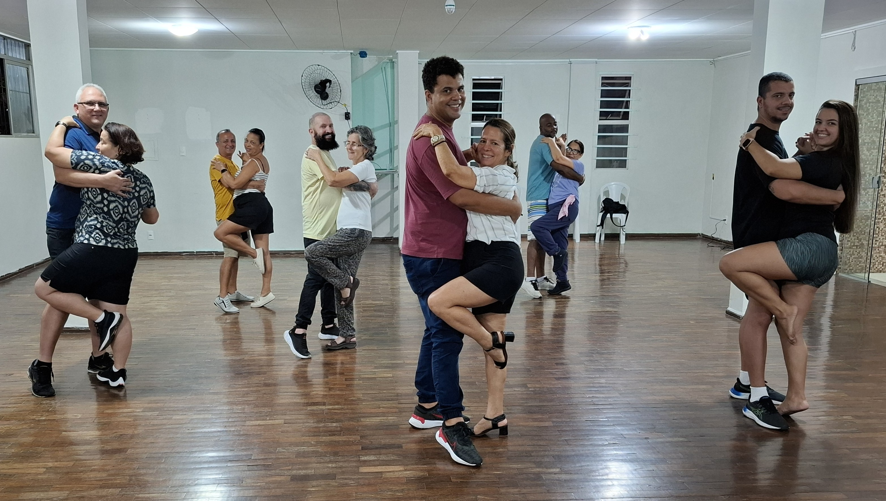

Bem vindo(a) a Academia de Dança Jimmy de Oliveira
Nova Turma de Forró para Iniciantes - Início 06 de Janeiro de 2025

Estamos animados em anunciar a abertura de uma nova turma de forró para iniciantes.
As aulas começarão no dia 06 de janeiro de 2025, e estamos prontos para levar você ao nível mais alto e sair do basico.
Por que Participar do Curso?
- Não precisa de par: Venha sozinho ou acompanhado! Não é necessário ter um parceiro para participar das aulas.
- Ideal para iniciantes: Se você nunca fez uma aula de dança antes, esta é a oportunidade perfeita para começar. O curso é especialmente projetado para quem está começando.
- Aulas dinâmicas: Nossos professores(Bruno e Monique) são experientes e apaixonados pelo forró, garantindo um ambiente acolhedor e motivador para todos os alunos.
- Benefícios para a saúde: Dançar forró não é apenas divertido, mas também uma excelente maneira de melhorar sua saúde física e mental.
O que você vai aprender?
- Passos básicos do forró pé de serra.
- Condução e conexão com o parceiro.
- Musicalidade e ritmo.
- Técnicas de giro e movimentos fluídos.
- A história e a cultura do forró.
Como se Inscrever?
Para se inscrever, visite nosso site ou entre em contato diretamente pelo telefone.
As vagas são limitadas, então garanta seu lugar o quanto antes!
Local das Aulas
Nossas aulas acontecerão no endereço Rua Henrique Laranja, 420 - Centro, Vila Velha,
em um espaço amplo e equipado para oferecer a melhor experiência de aprendizado.
Venha fazer parte da família Jimmy de Oliveira e descubra a alegria de dançar forró!
Estamos ansiosos para receber você em nossa nova turma de iniciantes.
Data de Início:
06 de janeiro de 2025
Local:
Rua Henrique Laranja, 420 - Centro, Vila Velha
Inscrições:
WhatsApp
Contato:
(27) 99864-6242
Esperamos você para começar o ano dançando e se divertindo!